5 Exploratory Data Analysis
5.1 Introduction
library("tidyverse")
library("viridis")
library("forcats")This will also use data from nycflights13,
library("nycflights13")5.1.1 Questions
5.1.2 Variation
5.1.2.1 Exercises
1. Explore the distribution of each of the x, y, and z variables in diamonds. What do you learn? Think about a diamond and how you might decide which dimension is the length, width, and depth.
In order to make it eaiser to plot them, I’ll reshape the dataset so that I can use the variables as facets.
diamonds %>%
mutate(id = row_number()) %>%
select(x, y, z, id) %>%
gather(variable, value, -id) %>%
ggplot(aes(x = value)) +
geom_density() +
geom_rug() +
facet_grid(variable ~ .)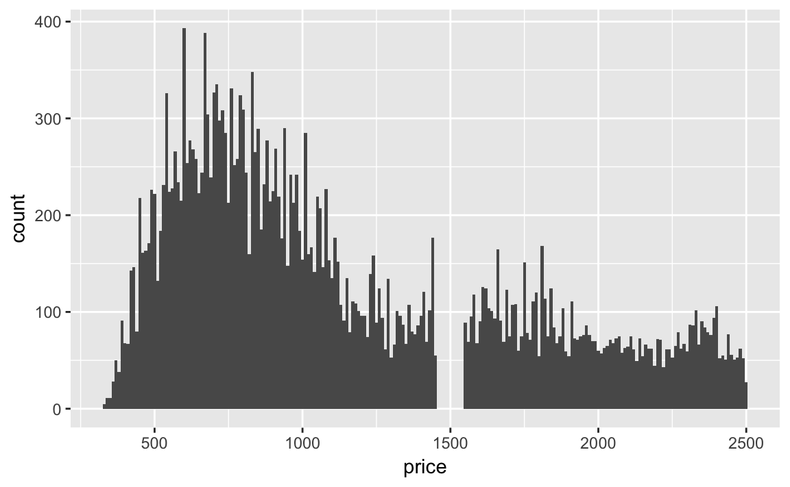
There several noticeable features of thedistributions
- They are right skewed, with most diamonds small, but a few very large ones.
- There is an outlier in
y, andz(see the rug) - All three distributions have a bimodality (perhaps due to some sort of threshhold)
According to the documentation for diamonds: x is length, y is width, and z is depth. I don’t know if I would have figured that out before; maybe if there was data on the type of cuts.
2. Explore the distribution of price. Do you discover anything unusual or surprising? (Hint: Carefully think about the binwidth and make sure you try a wide range of values.)
- The price data is spikey, but I can’t tell what that corresponds to, as the following plots don’t show much difference in the distributions in the last one and last two digits.
- There are no diamonds with a price of 1500
- There’s a bulge in the distribution around 7500.
ggplot(filter(diamonds, price < 2500), aes(x = price)) +
geom_histogram(binwidth = 10, center = 0)
ggplot(filter(diamonds), aes(x = price)) +
geom_histogram(binwidth = 100, center = 0)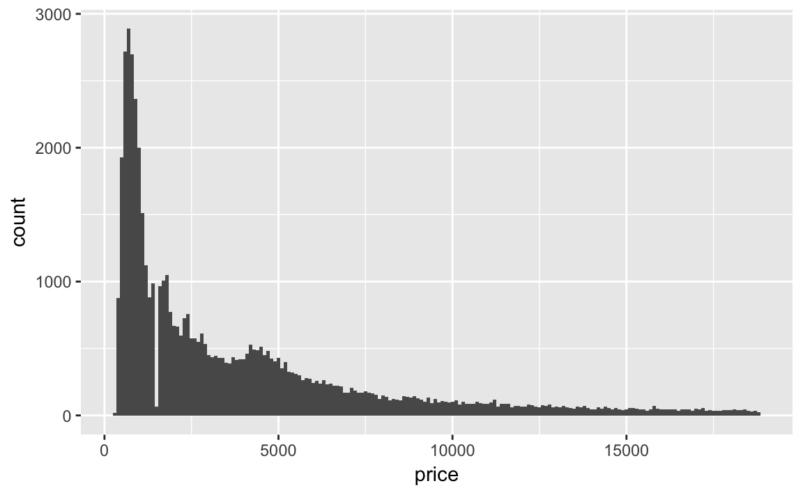
Distribution of last digit
diamonds %>%
mutate(ending = price %% 10) %>%
ggplot(aes(x = ending)) +
geom_histogram(binwidth = 1, center = 0) +
geom_bar()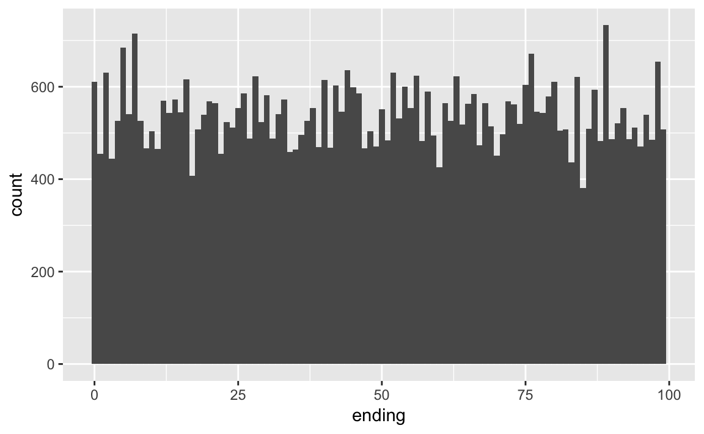
diamonds %>%
mutate(ending = price %% 100) %>%
ggplot(aes(x = ending)) +
geom_histogram(binwidth = 1) +
geom_bar()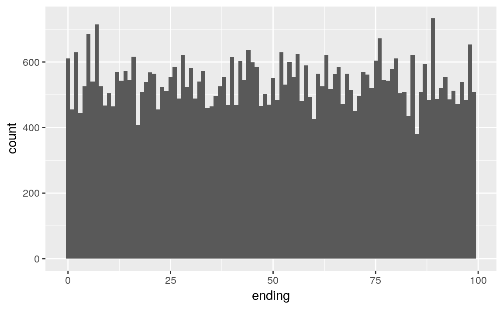
diamonds %>%
mutate(ending = price %% 1000) %>%
filter(ending >= 500, ending <= 800) %>%
ggplot(aes(x = ending)) +
geom_histogram(binwidth = 1) +
geom_bar()
3. How many diamonds are 0.99 carat? How many are 1 carat? What do you think is the cause of the difference?
There are more than 70 times as many 1 carat diamonds as 0.99 carat diamond.
diamonds %>%
filter(carat >= 0.99, carat <= 1) %>%
count(carat)
#> # A tibble: 2 × 2
#> carat n
#> <dbl> <int>
#> 1 0.99 23
#> 2 1.00 1558I don’t know exactly the process behind how carats are measured, but some way or another some diamonds carat values are being “rounded up”, because presumably there is a premium for a 1 carat diamond vs. a 0.99 carat diamond beyond the expected increase in price due to a 0.01 carat increase.
To check this intuition, we’d want to look at the number of diamonds in each carat range to seem if there is an abnormally low number at 0.99 carats, and an abnormally high number at 1 carat.
diamonds %>%
filter(carat >= 0.9, carat <= 1.1) %>%
count(carat) %>%
print(n = 30)
#> # A tibble: 21 × 2
#> carat n
#> <dbl> <int>
#> 1 0.90 1485
#> 2 0.91 570
#> 3 0.92 226
#> 4 0.93 142
#> 5 0.94 59
#> 6 0.95 65
#> 7 0.96 103
#> 8 0.97 59
#> 9 0.98 31
#> 10 0.99 23
#> 11 1.00 1558
#> 12 1.01 2242
#> 13 1.02 883
#> 14 1.03 523
#> 15 1.04 475
#> 16 1.05 361
#> 17 1.06 373
#> 18 1.07 342
#> 19 1.08 246
#> 20 1.09 287
#> 21 1.10 278Q Can you think of other examples of similar phenoma where you might expect to see similar discontinuities in areas related to your research.
- Compare and contrast
coord_cartesian()vsxlim()orylim()when zooming in on a histogram. What happens if you leavebinwidthunset? What happens if you try and zoom so only half a bar shows?
coord_cartesian simply zooms in on the area specified by the limits. The calculation of the histogram is unaffected.
ggplot(diamonds) +
geom_histogram(mapping = aes(x = price)) +
coord_cartesian(xlim = c(100, 5000), ylim = c(0, 3000))
#> `stat_bin()` using `bins = 30`. Pick better value with `binwidth`.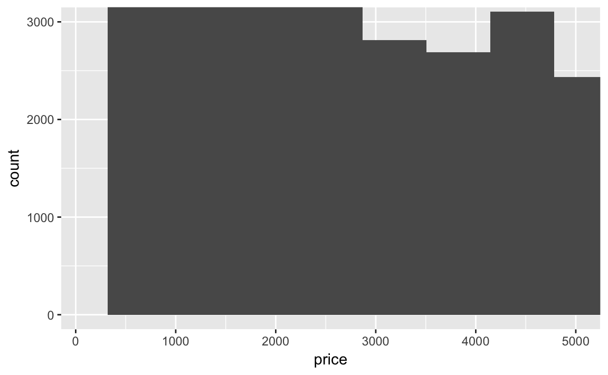
However, the xlim and ylim functions first drop any values outside the limits (the ylim doesn’t matter in this case), then calculates the histogram, and draws the graph with the given limits.
ggplot(diamonds) +
geom_histogram(mapping = aes(x = price)) +
xlim(100, 5000) +
ylim(0, 3000)
#> `stat_bin()` using `bins = 30`. Pick better value with `binwidth`.
#> Warning: Removed 14714 rows containing non-finite values (stat_bin).
#> Warning: Removed 5 rows containing missing values (geom_bar).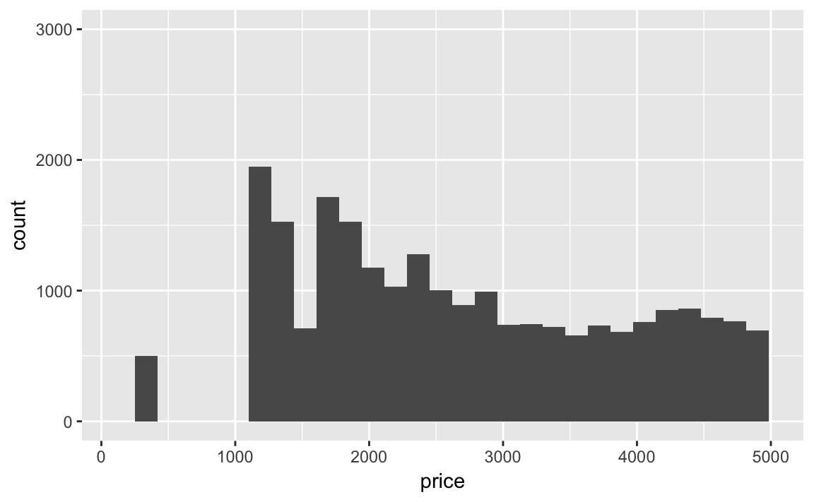
5.2 Missing Values
5.2.1 Exercises
- What happens to missing values in a histogram? What happens to missing values in a bar chart? Why is there a difference?
Missing values are removed when the number of observations in each bin are calculated. See the warning message: Removed 9 rows containing non-finite values (stat_bin)
diamonds2 <- diamonds %>%
mutate(y = ifelse(y < 3 | y > 20, NA, y))
ggplot(diamonds2, aes(x = y)) +
geom_histogram()
#> `stat_bin()` using `bins = 30`. Pick better value with `binwidth`.
#> Warning: Removed 9 rows containing non-finite values (stat_bin).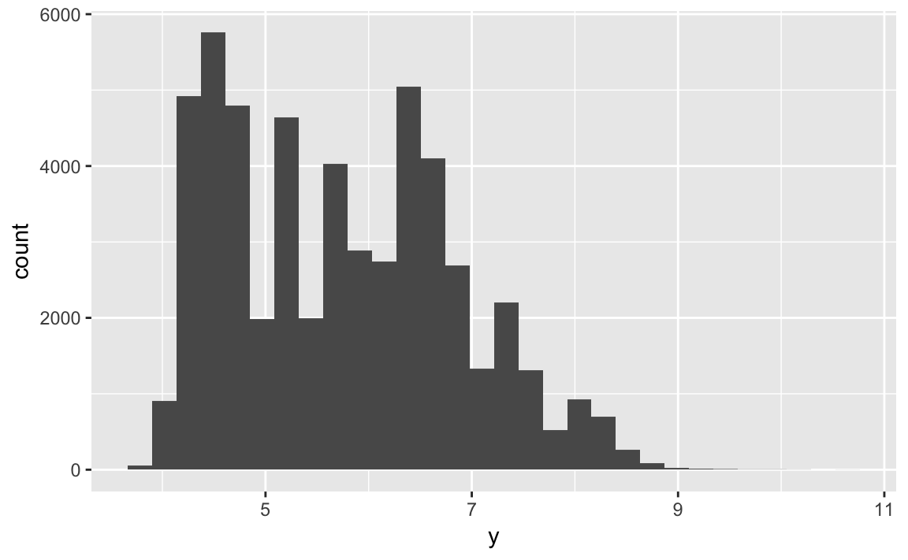
In geom_bar, NA is treated as another category. This is because the x aesthetic in geom_bar should be a discrete (categorical) variable, and missing values are just another category.
diamonds %>%
mutate(cut = if_else(runif(n()) < 0.1, NA_character_, as.character(cut))) %>%
ggplot() +
geom_bar(mapping = aes(x = cut))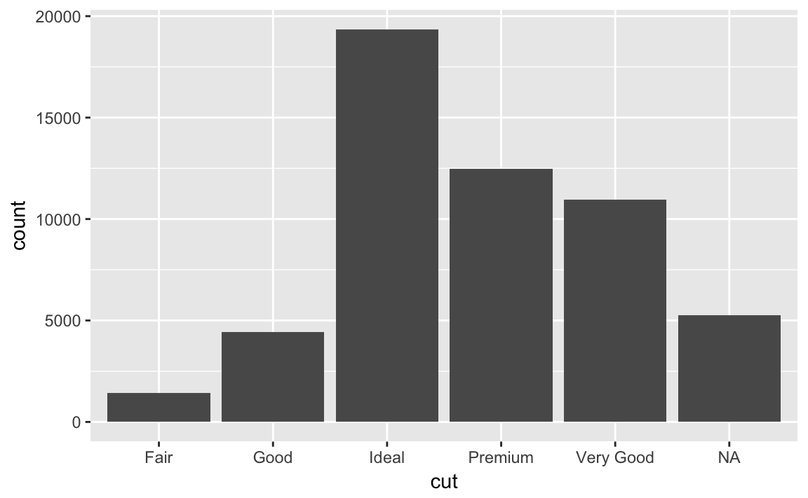
In a histogram, the x aesthetic variable needs to be numeric, and stat_bin groups the observations by ranges into bins. Since the numeric value of the NA observations is unknown, they cannot be placed in a particular bin, and are dropped.
- What does
na.rm = TRUEdo inmean()andsum()?
This option removes NA values from the vector prior to calculating the mean and sum.
mean(c(0, 1, 2, NA), na.rm = TRUE)
#> [1] 1
sum(c(0, 1, 2, NA), na.rm = TRUE)
#> [1] 35.3 Covariation
5.3.1 A categorical and continuous variable
For a history of the boxplot see Wikckham [40 years of the boxplot] (http://vita.had.co.nz/papers/boxplots.pdf)
Krywinski, Martin, and Naomi Altman. 2014. “Points of Significance: Visualizing samples with box plots.” Nature Methods URL
Where does the 1.5 x IQR come from? It’s kind of arbitrary. But in a normal distribution, the IQR is approximatley 2, and 1.5 x IQR is approx 4, so the outliers are approximately within 4 standard deviations of the median (mean).
5.3.1.1 Excercises
- Use what you’ve learned to improve the visualisation of the departure times of cancelled vs. non-cancelled flights.
Instead of a freqplot use a box-plot
nycflights13::flights %>%
mutate(
cancelled = is.na(dep_time),
sched_hour = sched_dep_time %/% 100,
sched_min = sched_dep_time %% 100,
sched_dep_time = sched_hour + sched_min / 60
) %>%
ggplot() +
geom_boxplot(mapping = aes(y = sched_dep_time, x = cancelled))- What variable in the diamonds dataset is most important for predicting the price of a diamond? How is that variable correlated with cut? Why does the combination of those two relationships lead to lower quality diamonds being more expensive?
I’m not exactly sure what this question is asking conditional on using only the tools introduced in the book thus far.
- Install the ggstance package, and create a horizontal boxplot. How does this compare to using
coord_flip()?
Earlier we created a horizontal boxplot of the distribution hwy by class, using geom_boxplot and coord_flip:
ggplot(data = mpg) +
geom_boxplot(mapping = aes(x = reorder(class, hwy, FUN = median), y = hwy)) +
coord_flip()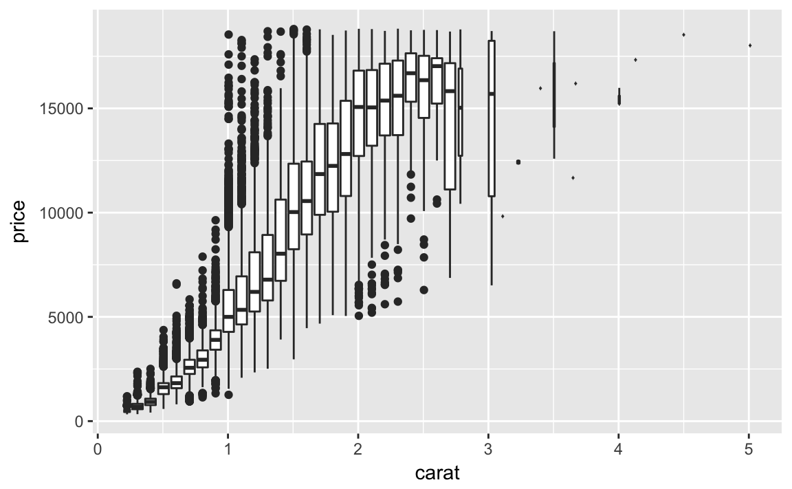
In this case the output looks the same, but in the aesthetics the x and y are flipped from the previous case.
library("ggstance")
ggplot(data = mpg) +
geom_boxploth(mapping = aes(y = reorder(class, hwy, FUN = median), x = hwy))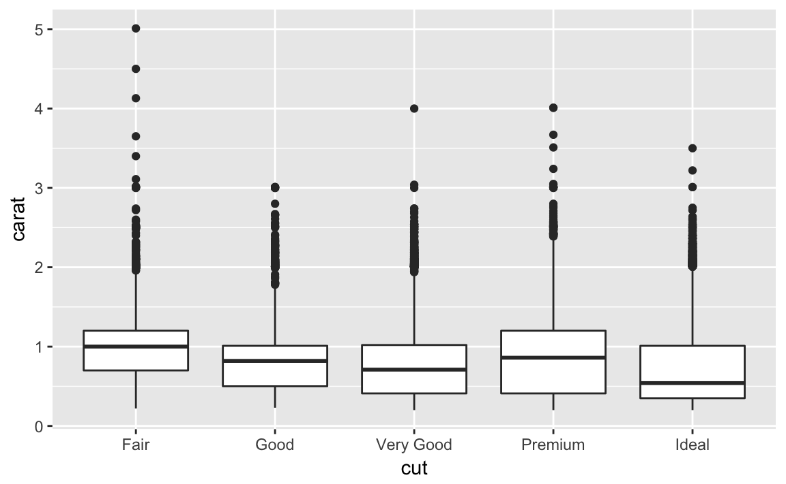
- One problem with boxplots is that they were developed in an era of much smaller datasets and tend to display a prohibitively large number of “outlying values”. One approach to remedy this problem is the letter value plot. Install the lvplot package, and try using
geom_lv()to display the distribution of price vs cut. What do you learn? How do you interpret the plots?
The boxes of the letter-value plot correspond to many more quantiles. They are useful for larger datasets because
- larger datasets can give precise estiamtes of quantiles beyond the quartiles
- in expectation, larger datasets should have many more outliers
The letter-value plot is described in:
Heike Hofmann, Karen Kafadar, and Hadley Wickham. 2011. “Letter-value plots: Boxplots for large data” http://vita.had.co.nz/papers/letter-value-plot.pdf
library("lvplot")
ggplot(diamonds, aes(x = cut, y = price)) +
geom_lv()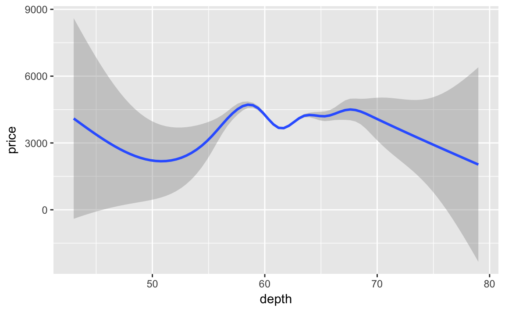
- Compare and contrast
geom_violin()with a facettedgeom_histogram(), or a colouredgeom_freqpoly(). What are the pros and cons of each method?
I produce plots for these three methods below. The geom_freqpoly is better for look-up: meaning that given a price, it is easy to tell which cut has the highest density. However, the overlapping lines makes it difficult to distinguish how the overall distributions relate to each other. The geom_violin and facetted geom_histogram have similar strengths and weaknesses. It is easy to visually distinguish differences in the overall shape of the distributions (skewness, central values, variance, etc). However, since we can’t easily compare the vertical values of the distribution, its difficult to look up which category has the highest density for a given price. All of these methods depend on tuning parameters to determine the level of smoothness of the distribution.
ggplot(data = diamonds, mapping = aes(x = price, y = ..density..)) +
geom_freqpoly(mapping = aes(colour = cut), binwidth = 500)
ggplot(data = diamonds, mapping = aes(x = price)) +
geom_histogram() +
facet_wrap(~ cut, ncol = 1, scales = "free_y")
#> `stat_bin()` using `bins = 30`. Pick better value with `binwidth`.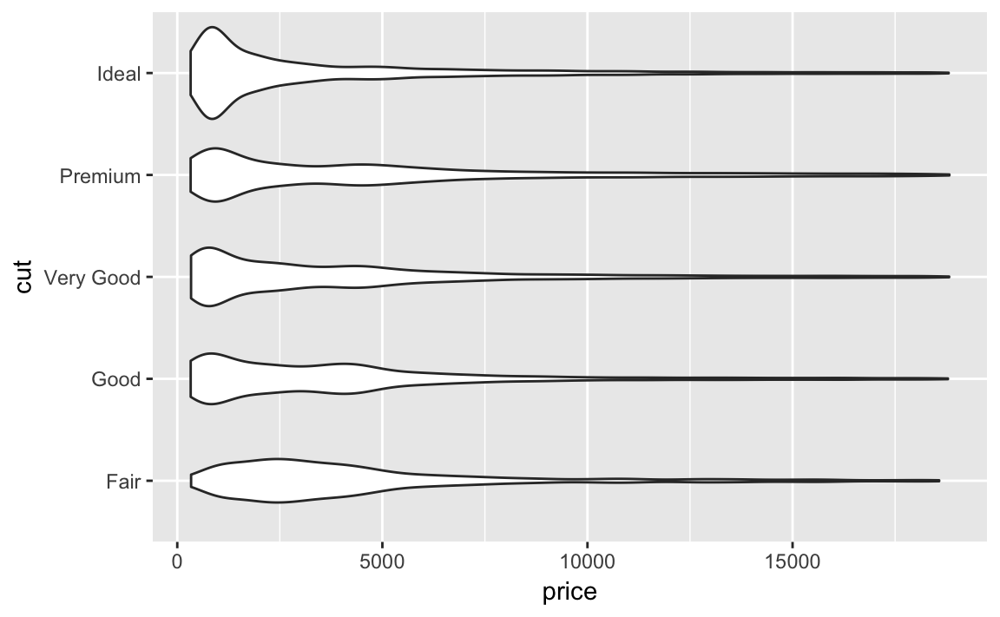
ggplot(data = diamonds, mapping = aes(x = cut, y = price)) +
geom_violin() +
coord_flip()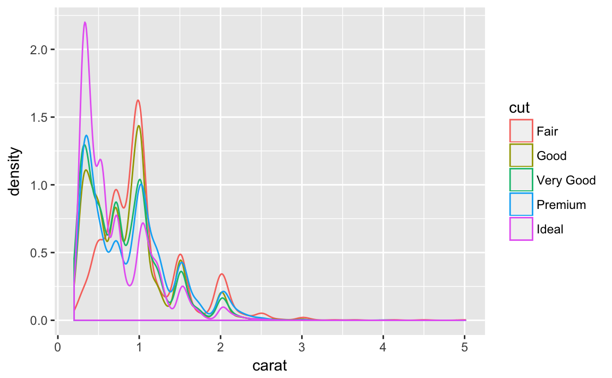
The violin plot was first described in
Hintze JL, Nelson RD (1998). “Violin Plots: A Box Plot-Density Trace Synergism.” The American Statistician, 52(2), 181–184
- If you have a small dataset, it’s sometimes useful to use
geom_jitter()to see the relationship between a continuous and categorical variable. The ggbeeswarm package provides a number of methods similar togeom_jitter(). List them and briefly describe what each one does.
There are two methods:
geom_quasirandomthat produces plots that resemble something between jitter and violin. There are several different methods that determine exactly how the random location of the points is generated.geom_beeswarmcreates a shape similar to a violin plot, but by offsetting the points.
I’ll use the mpg boxplot example since these methods display individual points, they are better suited for smaller datasets.
library("ggbeeswarm")
ggplot(data = mpg) +
geom_quasirandom(mapping = aes(x = reorder(class, hwy, FUN = median),
y = hwy))ggplot(data = mpg) +
geom_quasirandom(mapping = aes(x = reorder(class, hwy, FUN = median),
y = hwy),
method = "tukey")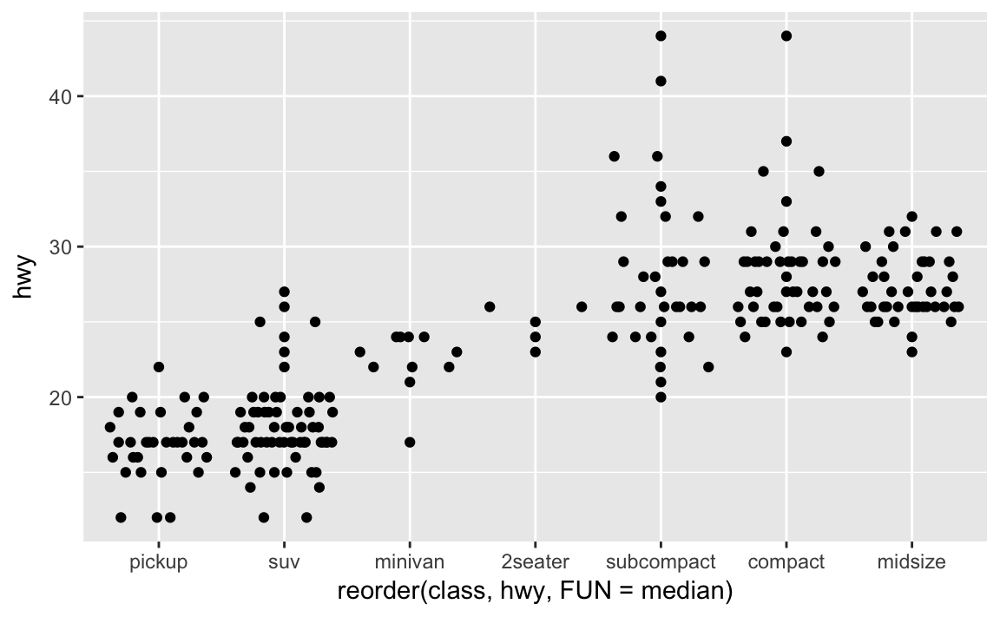
ggplot(data = mpg) +
geom_quasirandom(mapping = aes(x = reorder(class, hwy, FUN = median),
y = hwy),
method = "tukeyDense")
ggplot(data = mpg) +
geom_quasirandom(mapping = aes(x = reorder(class, hwy, FUN = median),
y = hwy),
method = "frowney")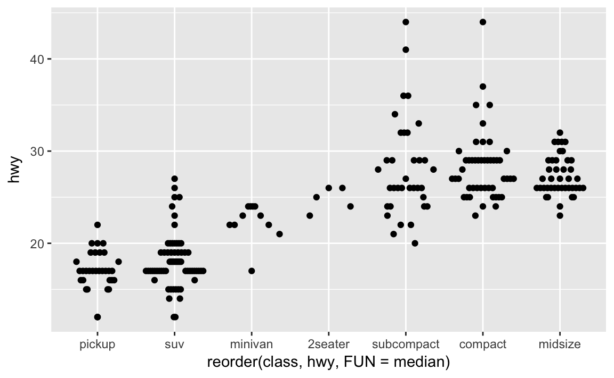
ggplot(data = mpg) +
geom_quasirandom(mapping = aes(x = reorder(class, hwy, FUN = median),
y = hwy),
method = "smiley")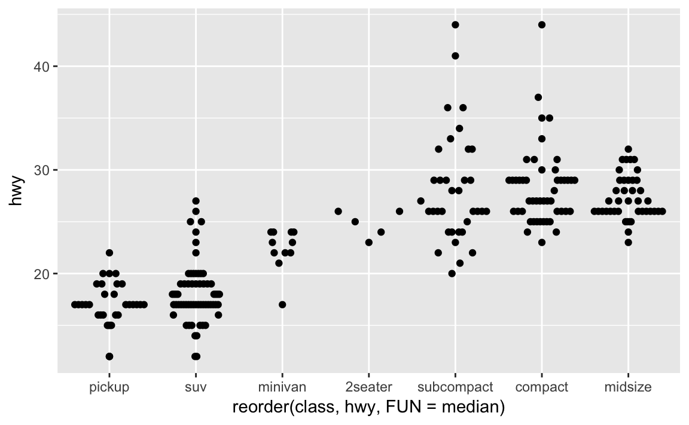
ggplot(data = mpg) +
geom_beeswarm(mapping = aes(x = reorder(class, hwy, FUN = median),
y = hwy))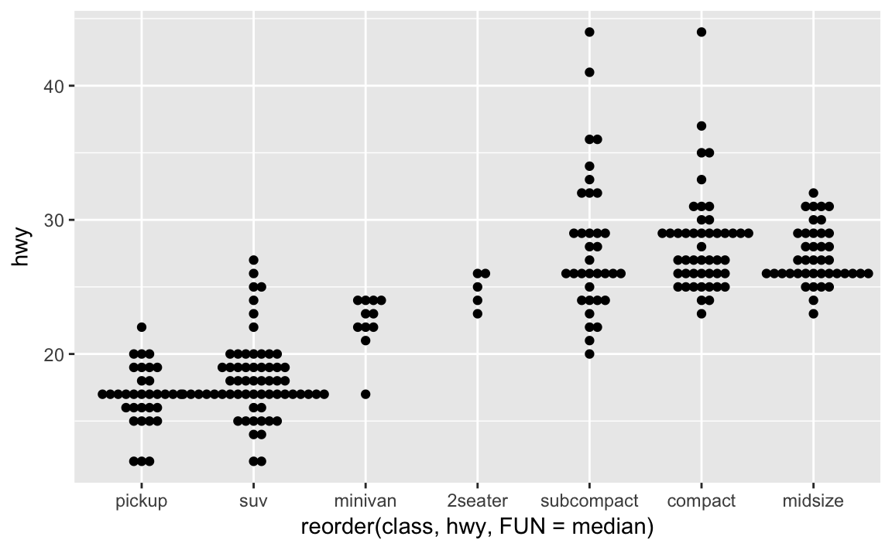
5.3.2 Two categorical variables
- How could you rescale the count dataset above to more clearly show the distribution of cut within colour, or colour within cut?
TO clearly show the distribution of cut within color, calculate a new variable prop which is the proportion of each cut within a color. This is done using a grouped mutate.
diamonds %>%
count(color, cut) %>%
group_by(color) %>%
mutate(prop = n / sum(n)) %>%
ggplot(mapping = aes(x = color, y = cut)) +
geom_tile(mapping = aes(fill = prop)) +
scale_fill_viridis(limits = c(0, 1))
Similarly, to scale by the distribution of color within cut,
diamonds %>%
count(color, cut) %>%
group_by(cut) %>%
mutate(prop = n / sum(n)) %>%
ggplot(mapping = aes(x = color, y = cut)) +
geom_tile(mapping = aes(fill = prop)) +
scale_fill_viridis(limits = c(0, 1))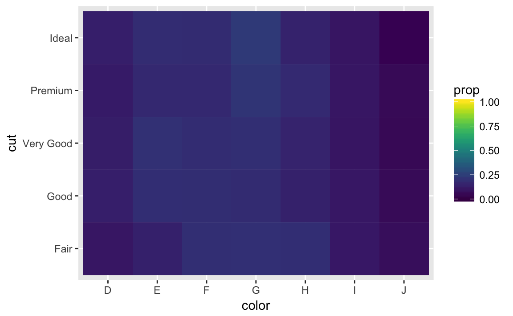
I add limit = c(0, 1) to put the color scale between (0, 1). These are the logical boundaries of proportions. This makes it possible to compare each cell to its actual value, and would improve comparisons across multiple plots. However, it ends up limiting the colors and makes it harder to compare within the dataset. However, using the default limits of the minimum and maximum values makes it easier to compare within the dataset the emphasizing relative differences, but harder to compare across datasets.
- Use
geom_tile()together with dplyr to explore how average flight delays vary by destination and month of year. What makes the plot difficult to read? How could you improve it?
flights %>%
group_by(month, dest) %>%
summarise(dep_delay = mean(dep_delay, na.rm = TRUE)) %>%
ggplot(aes(x = factor(month), y = dest, fill = dep_delay)) +
geom_tile() +
labs(x = "Month", y = "Destination", fill = "Departure Delay")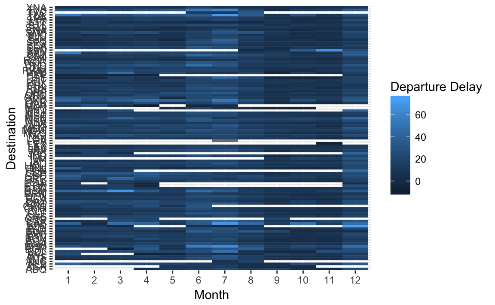
There are several things that could be done to improve it,
- sort destinations by a meaningful quanity (distance, number of flights, average delay)
- remove missing values
- better color scheme (viridis)
How to treat missing values is difficult. In this case, missing values correspond to airports which don’t have regular flights (at least one flight each month) from NYC. These are likely smaller airports (with higher variance in their average due to fewer observations).
library("viridis")
flights %>%
group_by(month, dest) %>%
summarise(dep_delay = mean(dep_delay, na.rm = TRUE)) %>%
group_by(dest) %>%
filter(n() == 12) %>%
ungroup() %>%
mutate(dest = fct_reorder(dest, dep_delay)) %>%
ggplot(aes(x = factor(month), y = dest, fill = dep_delay)) +
geom_tile() +
scale_fill_viridis() +
labs(x = "Month", y = "Destination", fill = "Departure Delay")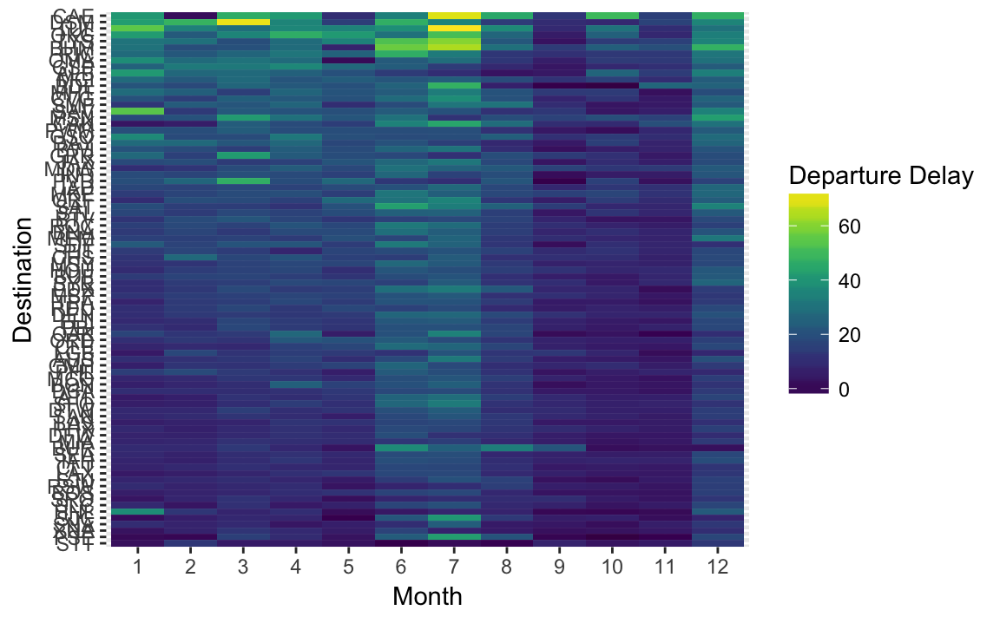
- Why is it slightly better to use
aes(x = color, y = cut)rather thanaes(x = cut, y = color)in the example above?
It’s usually better to use the categorical variable with a larger number of categories or the longer labels on the y axis. If at all possible, labels should be horizontal because that is easier to read.
However, switching the order doesn’t result in overlapping labels.
diamonds %>%
count(color, cut) %>%
ggplot(mapping = aes(y = color, x = cut)) +
geom_tile(mapping = aes(fill = n))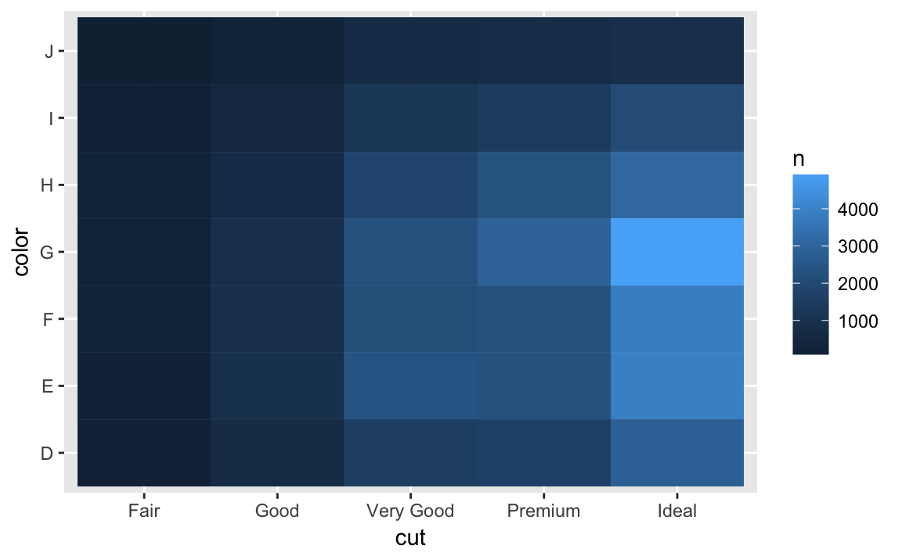
Another justification, for switching the order is that the larger numbers are at the top when x = color and y = cut, and that lowers the cognitive burden of interpreting the plot.
5.3.3 Two continuous variables
- Instead of summarising the conditional distribution with a boxplot, you could use a frequency polygon. What do you need to consider when using
cut_width()vscut_number()? How does that impact a visualisation of the 2d distribution ofcaratandprice?
When using cut_width the number in each bin may be unequal. The distribution of carat is right skewed so there are few diamonds in those bins.
ggplot(data = diamonds,
mapping = aes(x = price,
colour = cut_width(carat, 0.3))) +
geom_freqpoly()
#> `stat_bin()` using `bins = 30`. Pick better value with `binwidth`.Plotting the density instead of counts will make the distributions comparable, although the bins with few observations will still be hard to interpret.
ggplot(data = diamonds,
mapping = aes(x = price,
y = ..density..,
colour = cut_width(carat, 0.3))) +
geom_freqpoly()
#> `stat_bin()` using `bins = 30`. Pick better value with `binwidth`.Plotting the density instead of counts will make the distributions comparable, although the bins with few observations will still be hard to interpret.
ggplot(data = diamonds,
mapping = aes(x = price,
colour = cut_number(carat, 10))) +
geom_freqpoly()
#> `stat_bin()` using `bins = 30`. Pick better value with `binwidth`.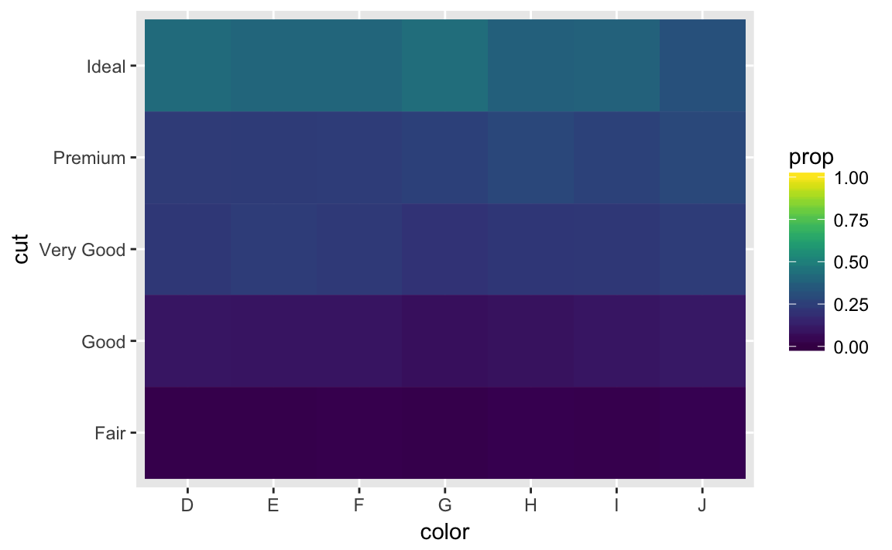 Since there are equal numbers in each bin, the plot looks the same if density is used for the y aesthetic (although the values are on a different scale).
ggplot(data = diamonds,
mapping = aes(x = price,
y = ..density..,
colour = cut_number(carat, 10))) +
geom_freqpoly()
#> `stat_bin()` using `bins = 30`. Pick better value with `binwidth`.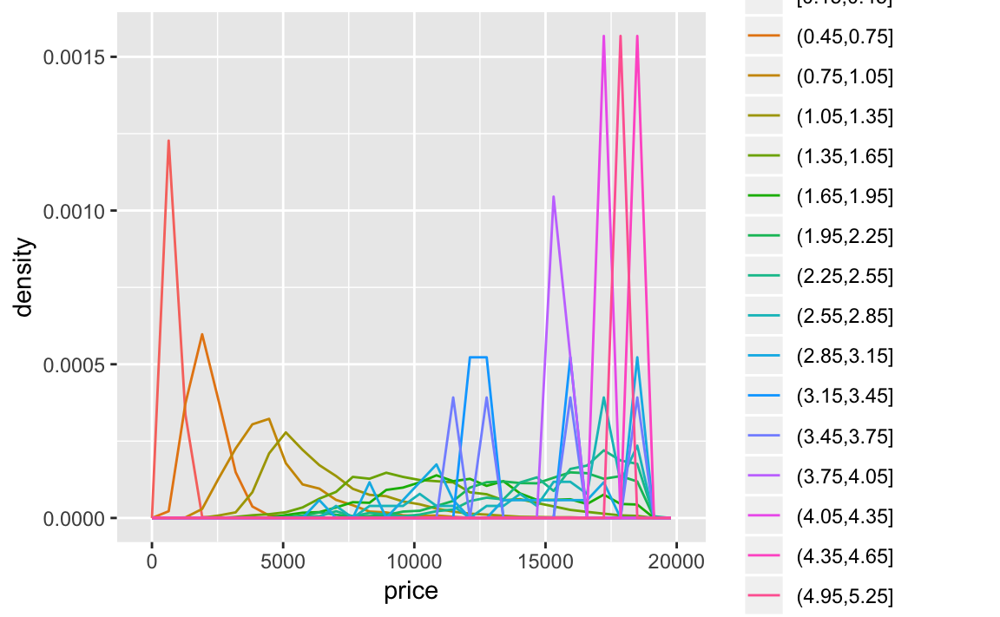
- Visualise the distribution of
carat, partitioned byprice.
With a boxplot, partitionining into an 10 bins with the same number of observations:
ggplot(diamonds, aes(x = cut_number(price, 10), y = carat)) +
geom_boxplot() +
coord_flip() +
xlab("Price") With a boxplot, partitionining into an bins of $2,000 with the width of the box determined by the number of observations. I use
With a boxplot, partitionining into an bins of $2,000 with the width of the box determined by the number of observations. I use boundary = 0 to ensure the first bin goes from $0–$2,000.
ggplot(diamonds, aes(x = cut_width(price, 2000, boundary = 0), y = carat)) +
geom_boxplot(varwidth = TRUE) +
coord_flip() +
xlab("Price")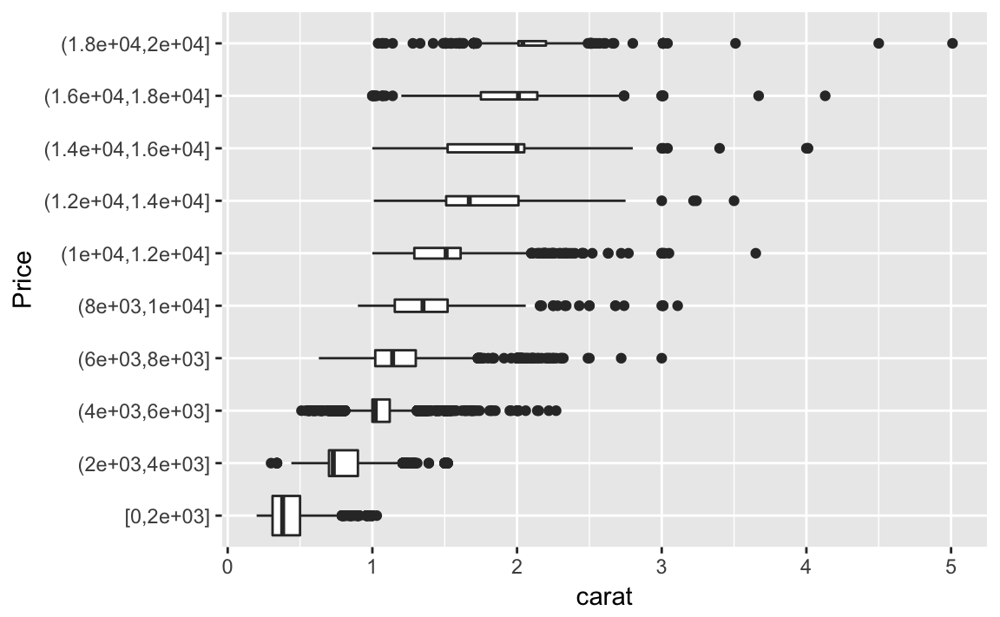
- How does the price distribution of very large diamonds compare to small diamonds. Is it as you expect, or does it surprise you?
The distribution of very large diamonds is more variable. I’m not surprised, since I had a very weak prior about diamond prices. Ex post, I would reason that above a certain size other factors such as cut, clarity, color play more of a role in the price.
- Combine two of the techniques you’ve learned to visualise the combined distribution of cut, carat, and price.
There’s lots of options to try: Here’s a couple. What else did you try? What’s the best way?
ggplot(diamonds, aes(x = carat, y = price)) +
geom_hex() +
facet_wrap(~ cut, ncol = 1) +
scale_fill_viridis()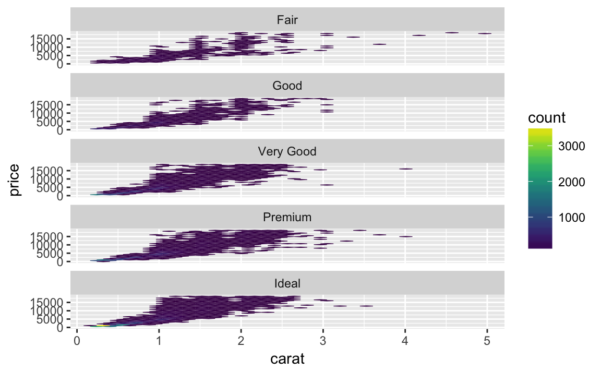
ggplot(diamonds, aes(x = cut_number(carat, 5), y = price, color = cut)) +
geom_boxplot()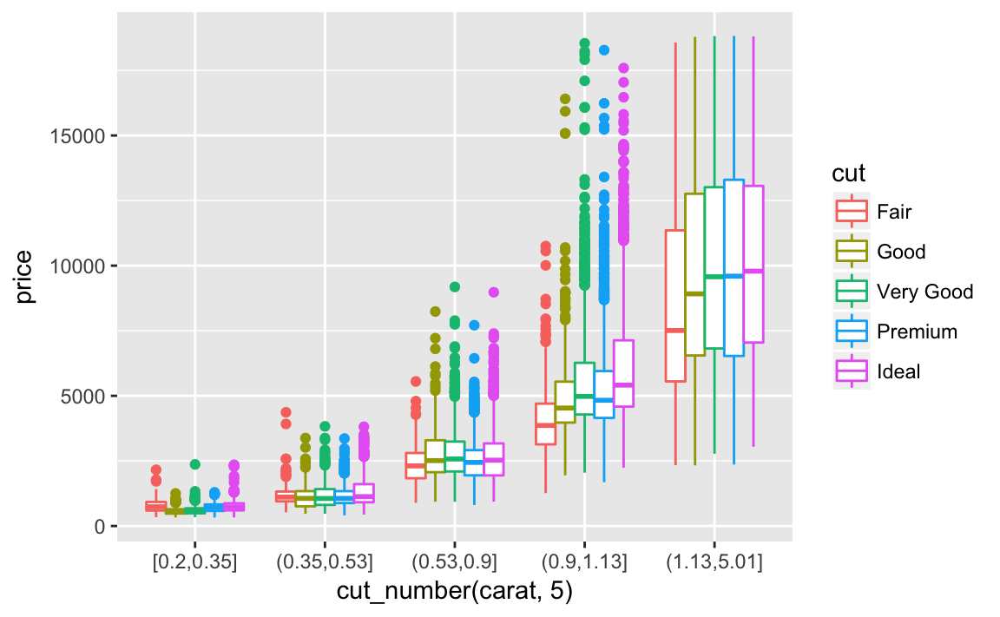
ggplot(diamonds, aes(color = cut_number(carat, 5), y = price, x = cut)) +
geom_boxplot()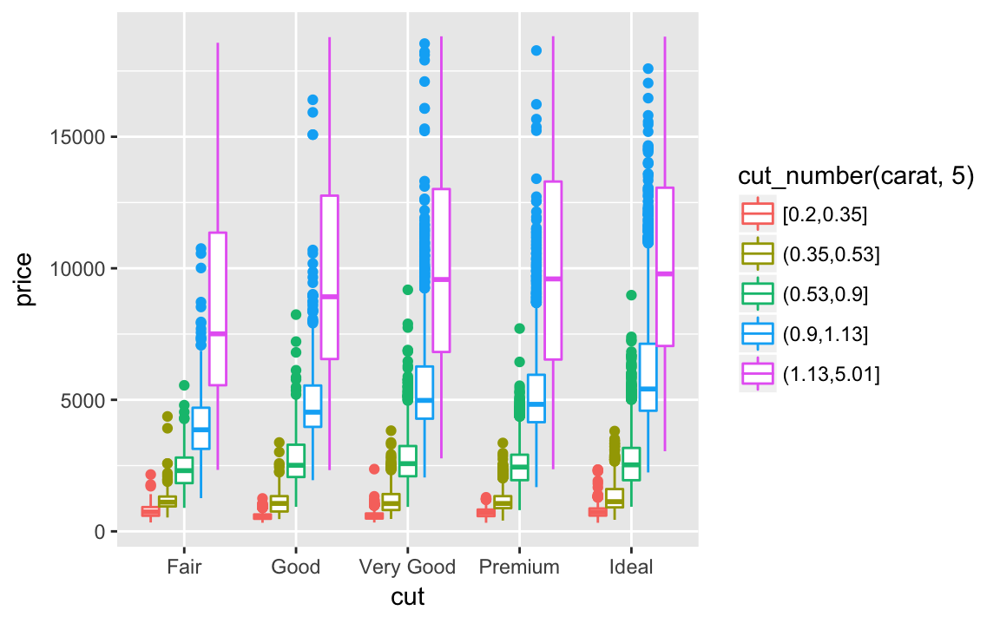